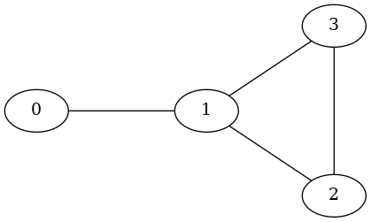

hiperwalk.Graph#
- class hiperwalk.Graph(adj_matrix)[source]#
Represents an arbitrary graph.
This class defines the graph structure used for implementing a quantum walk. It encapsulates all necessary properties and functionalities of the graph required for the quantum walk dynamics.
- Parameters:
- adj_matrix
scipy.sparse.csr_array,numpy.ndarrayornetworkx.Graph Adjacency matrix, Laplacian matrix, or any real Hermitian matrix.
If
network.Graph, the adjacency matrix of the graph is used.
- adj_matrix
- Raises:
- TypeError
If
adj_matrixis not a square matrix.
Notes
Todo
Check if it is more efficient to store the adjacency matrix as sparse or dense.
The graph \(G(V,E)\) on which the quantum walk takes place is specified by the adjacency matrix, Laplacian matrix, or any real Hermitian matrix \(C\). Let \(V\) be the vertex set \(\{v_0,...,v_{n-1}\}\), where \(n=|V|\). Two distinct vertices \(v_i\) and \(v_j\) in \(V\) are adjacent if and only if \(C_{ij}\neq 0\).
The class methods facilitate the construction of a valid quantum walk and can be provided as parameters to plotting functions. For visualizations, the default graph representation will be used. Specific classes are available for well-known graph types, such as hypercubes and lattices.
The preferred parameter type for the adjacency matrix is
scipy.sparse.csr_matrixwithdtype=np.int8.Each edge in the graph \(G(V, E)\) that connects two distinct vertices corresponds to a pair of arcs in the associated directed graph \(\vec{G}(V, A)\), where
\[\begin{align*} A = \bigcup_{v_k v_\ell\, \in E} \{(v_k, v_\ell), (v_\ell, v_k)\}. \end{align*}\]Arcs can be represented using the (tail,head) notation or with numerical labels. In the
Graphclass, the arc labels are ordered such that for two arcs, \((v_i, v_j)\) and \((v_k, v_\ell)\), with labels \(a_1\) and \(a_2\) respectively, \(a_1 < a_2\) if and only if \(i < k\) or (\(i = k\) and \(j < \ell\)). Note that a loop is represented as a single arc.If
adj_matrixis specified as a real Hermitian matrix \(C\), then \(C_{ij}\) represents the weight of the arc \((v_i, v_j)\). This weight is considered a generalized weight when \(C_{ij}\) is negative.Note
The arc ordering may change for graphs defined using specific classes.
For example, the graph \(G(V, E)\) shown in Figure 1 has an adjacency matrix
adj_matrix.>>> adj_matrix = np.array([ ... [0, 1, 0, 0], ... [1, 0, 1, 1], ... [0, 1, 0, 1], ... [0, 1, 1, 0]]) >>> adj_matrix array([[0, 1, 0, 0], [1, 0, 1, 1], [0, 1, 0, 1], [0, 1, 1, 0]])
Figure 1#
The arcs of the associated digraph in the arc notation are
>>> arcs = [(i, j) for i in range(4) ... for j in range(4) if adj_matrix[i,j] == 1] >>> arcs [(0, 1), (1, 0), (1, 2), (1, 3), (2, 1), (2, 3), (3, 1), (3, 2)]
Note that
arcsis already sorted, hence the associated numeric labels are>>> arcs_labels = {arcs[i]: i for i in range(len(arcs))} >>> arcs_labels {(0, 1): 0, (1, 0): 1, (1, 2): 2, (1, 3): 3, (2, 1): 4, (2, 3): 5, (3, 1): 6, (3, 2): 7}
The numeric labels are depicted in Figure 2.
![digraph {
0 [pos="0,0!"];
1 [pos="2,0!"];
2 [pos="3.5,-1!"];
3 [pos="3.5,1!"];
0 -> 1 [headlabel=0 labeldistance=4.75 labelangle=-10];
1 -> 0 [headlabel=1 labeldistance=4.75 labelangle=-10];
1 -> 2 [headlabel=2 labeldistance=4.75 labelangle=-10];
1 -> 3 [headlabel=3 labeldistance=4.75 labelangle=-10];
2 -> 1 [headlabel=4 labeldistance=4.75 labelangle=-10];
2 -> 3 [headlabel=5 labeldistance=5.5 labelangle=-7];
3 -> 1 [headlabel=6 labeldistance=4.25 labelangle=-10];
3 -> 2 [headlabel=7 labeldistance=5.5 labelangle=-7];
}](../../_images/graphviz-d291529b74dd776e3eb45c7c6835af0344323c8f.png)
Figure 2#
If we insert the labels of the arcs into the adjacency matrix, we obtain matrix
adj_labelsas follows:>>> adj_labels = [[arcs_labels[(i,j)] if (i,j) in arcs_labels ... else '' for j in range(4)] ... for i in range(4)] >>> adj_labels = np.matrix(adj_labels) >>> adj_labels matrix([['', '0', '', ''], ['1', '', '2', '3'], ['', '4', '', '5'], ['', '6', '7', '']], dtype='<U21')
Note that, intuitively, the arcs are labeled in left-to-right and top-to-bottom fashion.
Methods
Return the graph's adjacency matrix.
arc(number)Convert a numerical label to arc notation.
arc_number(*args)Return the numerical label of the arc.
arcs_with_tail(tail)Return all arcs that have the given tail.
degree(vertex)Return the degree of the given vertex.
Return the graph's Laplacian matrix.
neighbors(vertex)Return all neighbors of the given vertex.
Determine the cardinality of the arc set.
Determine the cardinality of the edge set.
Determine the cardinality of the vertex set.
vertex_number(vertex)Return the vertex number given any vertex representation.